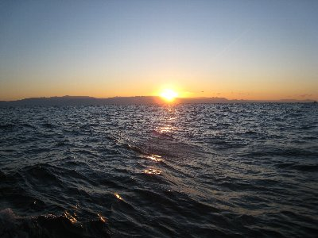

初日の出ヨット | 2011年1月 幹事：サムちゃん |
|---|---|
| その年最初の日の出を洋上（ヨット）で見よう！ と、サムちゃんが誘ってくれたので、1月1日の朝5時半に清水港に集合です。 たかにぃがお迎えに来てくれるというので、安心して年越し飲酒していたら、起きるのが大変でした。（仮眠2時間） 天気予報では強風かもねって言っていたけど、当日は穏やかな良い天気です。 港に着いた時は、当然ながら真っ暗ですが、イルミネーションが付いている船も有り、とても綺麗です。 新年の挨拶もそこそこに、朝6時出港です。今回は日の出を見て直ぐ帰ってくるので、帆を張らずエンジンだけで走ります。メンバーはサムちゃん入れて6名です。 | |
 清水港に集合！ |  イルミネーション付きのヨットも |
| 天候は晴れ。伊豆の方がうっすらと白んできました。富士山もシルエットですが雲も掛っておらず見ることが出来ます。 他の船も日の出を見るためか、何艇か出港していきます。港内は波も穏やかで、薄明かりの中にのっぺりと波が上下してますが、サムちゃんが「港から出ると波が有るかもよ」と言っていた通り、港から出たら大きめな波が押し寄せ、ヨットが大きく前後に揺れます。波を蹴散らしながら進む様は、まさに新年の船出に相応しい感じです。カッコいい！ 東の空がオレンジ色に染まってきたころ、三保沖に到着。海岸を見ると焚き火を囲んだ大勢の人々が見えました。明るくなってきて富士山も綺麗に見えてきました。洋上から見る赤く染まる富士は格別ですね。 | |
 暗い中、出航！ |  ちょっと明るくなってきた。後ろは富士山 |
| 7時近く、伊豆の山間からオレンジ色の火の玉が顔を出し、2011年初の太陽を拝みました。 日が出ると暖かくなって気持ちが良いですよね。顔に朝日を浴びると、リフレッシュしたようにすがすがしい気持ちになるのは、なぜでしょうね〜 太陽をいっぱい浴びて元気になって、港に戻りました。天気が良くて良かった。 今年もよろしくお願いいたします。 | |
 富士山が朝焼けで赤く染まる |  2011年の夜明けです |
| 写真＆コメント ｂｙ べっしー | |